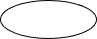
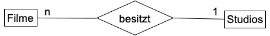
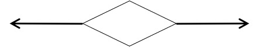
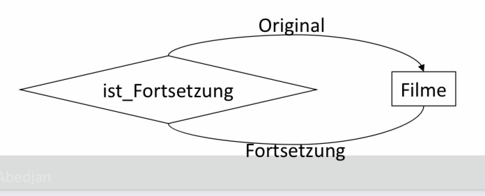
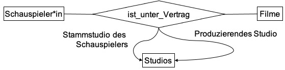
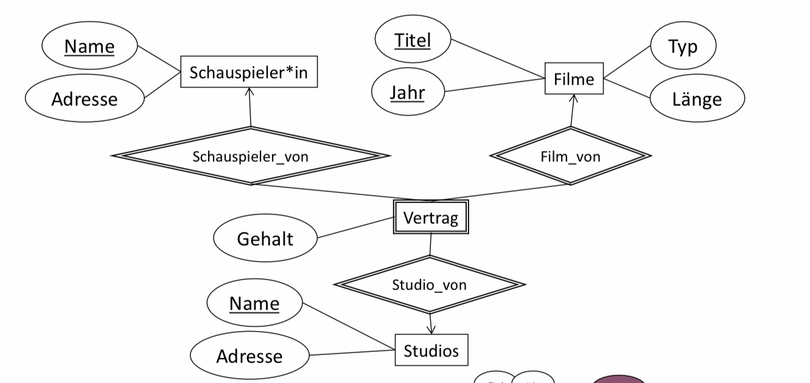
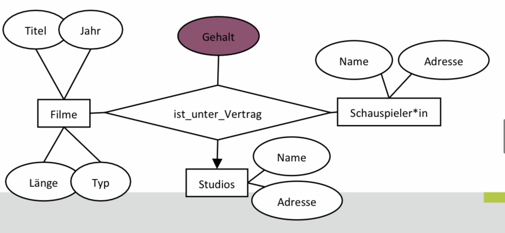
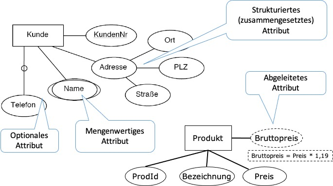
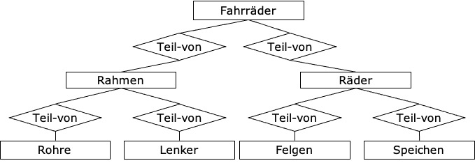

ER-Modellierung
Contents
5. ER-Modellierung¶
Beim konzeptionellen Entwurf möchten wir aus einer informellen Beschreibung einer Datenbank eine formelle Beschreibung erstellen in der Mehrdeutigkeiten und jegliche Namen- und Typkonflikte behoben sowie Einschränkungen und Bedingungen sinnvoll ausgedrückt werden können.
Eine Modellierungssprache für eine solche Modellierung ist das Entity-Relationship-Modell (ER-Modell).
5.1. Einführung: Das Entity-Relationship-Modell¶
Die ER-Modellerung wurde 1976 von Peter Chen vorgestellt und wird seitdem als das Standardmodell für die frühe Entwurfsphase des Datenbankentwurfes verwendet.
Original Publikation von 1976 |
Peter Chen |
|---|---|
|
|


Das Ergebnis einer ER-Modellierung sind ER-Diagramme, die Datenbanken beschreiben, die eine Instanz haben werden. Wir werden jetzt die zentralen Komponenten dieser Modellierungssprache und die Möglichkeiten damit Datenbedingungen und -beziehungen auszudrücken kennen lernen.
5.2. Begriffe¶
5.2.1. Komponenten¶
Die zentralen Komponenten der ER-Modellierung sind Entities, Entitytypen Relationships und Relationshiptypen.
Entity: Ein Ding / Objekt der realen oder der Vorstellungswelt
Relationship: Beschreibt Beziehungen zwischen zwei („konkreten“) Entities
Entities und Relationships sind nicht direkt darstellbar und werden nicht explizit im Diagram sichtbar, sondern nur über Eigenschaften ihrer Klassen beobachtbar
Entitytyp (entity set): Eine Klasse für gleichartige Objekte
Relationshiptyp: Eine Klasse für gleichartige Beziehungen
Komponente |
Darstellung |
Visuel |
|---|---|---|
Entitytyp |
Rechteck |
|
Relationshiptyp |
Raute |
|
Attribut |
Oval |
 |


Attribut: repräsentiert eine Eigenschaft von Entities oder von Relationships
Es gibt Attribute die nur aus primitiven Datenwerten (String, Integer, …) und Operationen darauf bestehen und auch komplexere zusammengesetzte Attribute, die wir in dieser Vorlesung jedoch nicht detailliert behandeln werden. Komplexe Attribute werden dem Erweiterten ER-Modell zugeordnet.
Attribute an Entitytypen:

Attribute an Relationshiptypen:

Beispiel: Im folgenden Diagram wollen wir Informationen über Filme, Schauspieler*innen und Studios modellieren.
Ein Film enthält daten über Titel, Jahr, Länge und Typ.
Dargestellt über einen Entitytypen und vier Attribute
Über Schauspieler*innen sollen Name und Adresse gespeichert werden
Dargestellt über einen Entitytypen und zwei Attribute
Über Studios sollen Name und Adressen gespeichert werden.
Dargestellt über einen Entitytypen und zwei Attribute
Es soll abgebildet werden dass Schauspieler*innen in Filmen mitspielen.
Dargestellt über einen Relatioshiptypen der Filme und Schauspieler*innen verbindet
Es soll dargestellt werden, dass Studios die Rechte an Filmen besitzen. Insbesondere soll ein Film genau einem Studio gehören.
Dargestellt über einen Relatioshiptypen der Filme und Studios verbindet. Den letzten Punkt über “genau einem Studio” werden wir später im Kontext von Kardinalitäten genauer betrachten.
5.2.2. Instanz eines ER-Diagramms¶
Wie bereits gesagt beschreiben ER-Diagramme Datenbanken, die eine Instanz haben (werden). Dabei gilt, dass der „Wert“ eines Entitytypen die (endliche) Menge der zugehörigen Entities ist. Jeder Entity hat bestimmte Werte für seine Attribute, z.B., Baisc Instinct = {Titel=Basic Instinct, Jahr = 1992, Länge = 127, Typ = Farbe}. Die Instanz eines n-ären Relationshiptypen ist eine Menge von n-Tupel, z.B spielt_in_instanz_1= (Basic Instinct, Sharon Stone). Dies alles ist an dieser Stelle nur abstrakte Denkhilfe. Die Modellierung im relationalen Modell wird sich nochmal unterscheiden, sodass sich die Abspeicherung durch ein DBMS auch unterscheiden wird.
Beispiel: Die Folgenden Tabellen stellen die Instanzen eines Teiles unseres Modells in der finalen Datenbank im relationalen Modell (als Tabellen) dar.
| Filme | Schauspieler*in | spielt_in | ||||||||||||||||||||||||||||||||||
|---|---|---|---|---|---|---|---|---|---|---|---|---|---|---|---|---|---|---|---|---|---|---|---|---|---|---|---|---|---|---|---|---|---|---|---|---|
|
|
|
5.3. Kardinalitäten von Relationshiptypen¶
Allgemein: Ein binärer Relationshiptyp kann beliebig viele Entities des einen Typen mit beliebig vielen des anderen Typen verbinden. Betrachten wir zum Beispiel unsere Beispieldatenbank über Filme. Hier kann eine Schauspielerin in mehreren Filmen mitspielen und gleichzeitig mehrere Schauspielerinnen in einem einzigen Film. Hierbei nutzen wir bewusst “kann”, da nicht jede Entity mit einem anderen Entity des jeweiligen typen verbunden sein muss. Beispielsweise spielen in Animationsfilme keine Schauspieler*innen. Anders ist es bei Relationshiptypen, bei denen eine Verbindung erzwungen werden muss. Beispielsweise muss jeder Film von einem Studio produziert werden - in diesem Fall sogar von genau einem Studio.
Man kann diese Kardinalitäten im ER-Modell genau spezifizieren. Es gibt im Allgemeinen drei häufige Kardinalitäten:
5.3.1. m:n Beziehungen¶
m:n Beziehungen sagen aus, dass jede Entity des einen Typen mit keinem oder mehreren Entities des anderen typen verbunden sein kann.
Beispiele: Filme und Schauspielerinnen, Produkte und Kundinnen, Studierenden und Vorlesungen
5.3.2. 1:n Beziehungen¶
1:n Beziehungen sagen aus, dass jede Entity des einen Typen mit maximal einem Entity des anderen Typen verbunden sein kann. Diese Beziehung gilt aber nur in eine Richtung.

Beispiele: Ein Studio kann die Rechte an mehreren Filmen besitzen. Ein Film kann nur von einem Studio besessen werden.
Darstellung mittels eines Pfeils zur „1er“ Seite.
5.3.3. 1:n Beziehungen¶
1:1 Beziehung sagen aus, dass jede Entity des einen Typen mit maximal einem Entity des anderen Typen verbunden sein kann und umgekehrt.
Beispiel: Ein Studio kann nur von einer Vorsitzenden geleitet werden. Eine Vorsitzende kann nur ein Studio leiten. Auch hier gilt immernoch “kann”. Wir werden eine Notation für eine totale Abbildung, d.h., wo die Beziehung stattfinden muss, noch kennen lernen. In unserem Beispiel kann ein Studio theoretisch (vorübergehend) keinen Vorsitzenden haben.
Darstellung mittels eines Pfeils zu beiden Seiten.
5.4. Weitere Notationen für Kardinalitäten¶
Sie werden in der Literatur verschiedene Notationen für die Darstellung von Kardinalitäten finden. Diese sind unterschiedlich mächtig. Bisher haben wir lediglich die grafische Notation kennen gerlernt, die über Pfeiltypen ausgedrückt wird. Eine Verbindung ohne ein Pfeil eine beliebige Anzahl von verbindungen also “n” suggeriert und ein Pfeil maximal eine Verbindung also “1”. Diese Notation lässt noch keine Nebenbedingungen hinsichtlich konkreter “n”-Werte zu. Im folgenden werden wir noch die Min-Max-Notation und Numerische Notation kennen lernen.
5.4.1. Min-Max-Notation (Look-Up-Semantik)¶
Die Min-Max-Notation schränkt die möglichen Teilnahmen von Instanzen der beteiligten Entitytypen an der Beziehung ein. Insbesondere drückt sie aus wie häufig eine Instanz minimal bzw. maxima. an einer Beziehung teilnimmt. Die Notation ist (Min,Max) an der Seite des Entitytypen.
Im folgenden Beispiel sagt (0,1) an der Seite des Produktes aus, dass ein Produkt entweder in einem oder keinem Regal gelagert wird. Andersherum sagt (0,3) auf der Seite des Regals aus, dass in einem Regal 0 bis 3 unterschiedliche Produkte gelagert werden können.

5.4.2. Numerische Notation (Partizipationssemantik)¶
Die numerische Notation ist eine vereinfachende Form, in der man ausdrück mit wie vielen Instanzen des gegenüberliegenden Typen eine Verbindung maximal aufgebaut wird.
Im folgenden Beispiel besagt die Angabe von “n” auf der Seite der Filme, dass bis zu n Filme mit einem Studio verbunden sein können. Die “1” auf der Seite von Studio besagt, dass jeder Film mit maximal einem Studio verbunden sein kann.
In der folgenden Tabelle sind nochmal alle drei Möglichkeiten Kardinalitäten anzugeben gegenübr gestellt.
Beziehungsart |
(min,max) links |
(min, max) rechts |
Numerisch links |
Numerisch rechts |
Grafische Notation |
|---|---|---|---|---|---|
many-to-many |
(0,* ) |
(0,* ) |
n |
n |
|
one-to-many |
(0,* ) |
(0,1 ) |
1 |
n |
|
many-to-one |
(0,1 ) |
(0,* ) |
n |
1 |
|
one-to-one |
(0,1 ) |
(0,1 ) |
1 |
1 |
|


5.4.3. Totale Beziehung¶
Bisher haben wir hauptsächlich Beziehungstypen kennen gelernt, die auf “kann” basieren. Lediglich mit der Min-Max-Notation können wir bisher sicherstellen, dass jede Entity eines Types an einer Beziehung teilnehmen muss, in dem wir den Minimalwert auf eine Zahl größer als 0 setzen: (1,* ) bedeutet, dass jede Entity mindestens einmal an einer Beziehung teilnehmen muss. Entsprechend bedeutet (1,1), dass jedes Entity genau einmal an einer Beziehung teilnehmen muss.
Die totale Abbildung stellt man grafisch entweder durch einen offenen Pfeil auf der Seite der totalen Abbildung dar oder anhand eines Doppelstriches:
Offener Pfeil |
Doppelstrich |
|---|---|
|
|


{kind=link}
{kind=link}
{kind=link}
{kind=link}
{kind=link}
Analog kann man eine totale 1:1 Beziehung folgender Maßen darstellen:
{kind=link}
5.5. Entitytypen und Rollen¶
Entitytypen können mehr als einmal in einer Relationship auftauchen, beziehungsweise kann Entitytyp durch ein Relationshiptyp mit sich selbst verbunden sein. Dabei tauchen Sie jeweils in unterschiedlichen Rollen auf. Die ER-Modellierung ermöglicht die explizite Modellierung von Rollen durch Annotation an den Kanten der Relationships.
Beispiel (Rolle 1): Im folgenden Beispiel wird modelliert, dass Filme Fortsetzungen von einander sein können. Dabei taucht der Entitytyp Film ein mal in der Rolle des Originals und ein mal in der Rolle der Fortsetzung mit dem Relationshiptypen “ist_Fortsetzung” auf.
Beispiel (Rolle 2): Im folgenden Beispiel taucht Studio in zwei Rollen auf: als Stammstudio und als Vertragsstudio. 
Diese Modellierung impliziert, dass das Stammstudio eines Schauspielers einem anderen Studio erlaubt den/die Schauspieler*in für einen bestimmten Film auszuleihen.
Mit Hilfe von Rollen vermeidet man unnötig redundante Entitytypen zu modellieren. Theoretisch könnte man jede Rolle als einen Entitytypen modellieren. Dies würde bedeuten, dass wir zwei Entitytypen mit den gleichen Attributen und höchstwahrscheinlich einer großen Überlappung von Entities haben würden.
5.5.1. n-äre Relationships¶
Relationships zwischen mehr als zwei Entities
Ein/e Schauspieler*in steht bei einem Studio für eine bestimmten Film unter Vertrag
Instanz der Relationship kann man als Tripel darstellen.
Kardinalitäten: Jede Kombination von Schauspieler und Film kann nur mit einem
Studio in Beziehung stehen.

5.5.2. Konvertierung in binäre Relationships¶
Umwandlung n-ärer Relationships in binäre Relationships
Erstellung eines neuen, verbindenden Entitytyps
Neue n:1 Relationships zwischen dem neuen Entitytyp und den alten Entitytypen
Falls ein Entitytyp mehrere Rollen spielt, entsteht pro Rolle ein Relationshiptyp.
Attribute des Relationshiptyps werden an den neuen Entitytyp angehängt.
5.5.3. Attribute an Relationships¶
In manchen Fällen ist es hilfreich, Relationships Attribute zuzuordnen
Bsp: In dem Drehvertrag wird ein Gehalt festgestellt.
Zuordnung zu Schauspieler? Er könnte für verschiedene Filme unterschiedliche Gehälter bekommen.
Zuordnung zum Film? Verschiedene Schauspieler könnten unterschiedliche Gehälter bekommen.
Zuordnung zum Studio? Es könnte verschiedenen Schauspielern unterschiedliche Gehälter zahlen.

5.6. IST-Beziehung¶
Subklasse
Spezialfall / Spezialisierung
Weniger Entities
Mehr Attribute
Eventl. mehr Relationships
Besonderer Relationshiptyp
IST (is-a)
Darstellung durch Dreieck
Spitze zeigt zur Superklasse
Immer 1:1
Trotzdem keine Pfeile
5.6.1. IST-Beziehung als Bäume¶
IST-Beziehungen nur als Bäume
Keine Mehrfachvererbung
Ein Entity kann aus mehreren Komponenten des IST-Baumes bestehen.
„Krieg der Sterne“ hat vier Attribute.
„Cinderella“ hat vier Attribute und „Stimmen“-Relationships.
„Der dritte Mann“ hat vier Attribute und zusätzlich das Attribut „Waffen“.
„Roger Rabbit“ hat vier Attribute, zusätzlich das Attribut „Waffen“ und „Stimmen“-Relationships.
Anders als objekt-orientierte Modelle
In OO sind Objekte immer in genau einer Klasse; Subklassen erben von Superklasse(n).
In ER sind Entities in allen Subklassen repräsentiert, in die sie gehören.
In ER ist ein Entity in einer Subklasse auch automatisch in den Superklassen repräsentiert.
5.7. Nebenbedingungen(Constraints)¶
Schlüssel
Ein oder mehrere Attribute
Werte identifizieren eindeutig ein Entity.
Referentielle Integrität
Existenz des referenzierten Entities
Entspricht „dangling pointer“
Domänen
Einschränkung des Wertebereichs
Allgemeine Nebenbedingungen (assertions)
Z.B. nicht mehr als 10 Schauspieler pro Film
Nebenbedingungen sind Teil des Schemas. Sie leiten sich nicht aus den Daten ab!
5.8. Schlüssel¶
Ein Schlüssel ist eine (minimale) Menge von Attributen eines Entitytyps, für die gilt, dass keine zwei Entities gleiche Werte in allen Schlüsselattributen haben.
Einige Attributwerte können übereinstimmen.
Oft nur ein Attribut
Für jeden Entitytyp muss ein Schlüssel angegeben werden.
Es kann mehr als einen Schlüssel für einen Entitytyp geben.
Üblich: Primärschlüssel auswählen
Bei IST-Beziehungen muss die Wurzel-Superklasse sämtliche Schlüsselattribute enthalten.
Darstellung durch Unterstreichen der Attributnamen
5.8.1. Referentielle Integrität¶
Schlüssel: Höchstens ein bestimmter Wert für ein Attribut
Bzw. höchstens eine Wertekombination bei mehreren Attributen im Schlüssel
Referentielle Integrität: Genau ein bestimmter Wert
Bsp. n:1 Relationship zwischen „Filme“ und „Studios“
Ein Film kann zu höchsten einem Studio gehören.
Aber ein Film muss zu keinem Studio gehören.
Auch wenn ein Film zu einem Studio gehört, muss dieses nicht in der DB repräsentiert sein.
Referentielle Integrität erzwingt die Existenz und Repräsentation des Studios
„Erzwingen“
Bei Einfügen/Ändern eines Films muss entsprechendes Studio vorhanden sein.
Ein Studio darf nicht gelöscht werden, solange es noch Filme besitzt.
<br<
Oder: Wenn ein Studio gelöscht wird, werden auch alle entsprechenden Filme gelöscht.
Verschiedene Einstellungen im DBMS

5.8.2. Weitere Nebenbedingungen¶
Ohne formale Notation im ER-Diagramm
Datentyp
Integer, String, …
Wertebereich / Domäne
≤ 100, {Krimi,Doku,Zeichentrick}
Länge eines Attributes
Stringlänge < 25
Kardinalität von Relationships
Höchstens 10 Schauspieler pro Film
Oder mittels min/max Notation
5.9. Schwache Entitytypen¶
5.9.1. Motivation¶
Motivation
In bestimmten Situationen können Entities nicht allein anhand ihrer Attribute identifiziert werden:
Falls sie in eine nicht-IST-Hierarchie fallen.
Entities, die zur Eliminierung n-ärer Relationships erschaffen wurden.
Ein Entitytyp ist schwach wenn es zur eindeutigen Identifizierung eines Entities nötig ist, eine oder mehr n:1 Relationships zu folgen und den Schlüssel der verwandten Entities hinzuzunehmen.

Ein Studio beschäftigt mehrere Filmcrews.
Filmcrews werden mit einer Nummer versehen.
Verschiedene Studios könnten eigene Crews mit gleichen Nummern beschäftigen.
Nummer ist also kein Schlüssel
Nimmt man den Schlüssel der Studios hinzu ist eine eindeutige Identifizierung möglich.

Eine Spezies ist definiert durch den Namen der Gattung und des Spezies.
Gattung: homo
Spezies: homo sapiens

Fall 2: Auflösung einer ternären Relationship Vertrag hat kein Attribut, das Teil des Schlüssels ist.

5.9.2. Schwache Entitytypen¶
Man scheut sich oft einen Schlüssel zu deklarieren.
Die Folge: Man schwächt ein Entitytyp und macht alle seine Relationships zu unterstützenden Relationships.
In der Realität werden sehr oft künstliche IDs verwendet.
ISBN, SNN, VIN, etc.
Grund für das Fehlen eines solchen Schlüssels: Es gibt keine entsprechende Autorität, die einen solchen Schlüssel vergeben könnte.
Bsp: Es ist unwahrscheinlich, dass jedem Fußballer der Welt eine eindeutige ID zugewiesen wird.
5.9.3. Schlüssel schwacher Entitytypen¶
Falls E ein schwacher Entitytyp ist, besteht sein Schlüssel aus…
… null oder mehr eigenen Attributen
… und den Schlüsselattributen von Entitytypen, die über bestimmte n:1
Relationshiptypen, den „unterstützenden Relationshiptypen“ erreicht werden können.
Supporting relationships
Unterstützende Relationshiptypen
n:1 vom schwachen Entitytypen zu einem anderen Entitytypen
Es muss referentielle Integrität gelten.
Falls referenzierter Entitytyp wiederum schwach ist, werden (rekursiv) weitere Schlüsselattribute übernommen.
5.10. Erweitertes ER-Modell¶
5.10.1. Weitere Attributarten¶

Optionales Attribut
Attributwert nicht für jede Entität vorhanden
Abgeleitetes Attribut
Wert wird anhand einer Berechnungsvorschrift aus nicht-abgeleiteten Attributen errechnet.
Mengenwertiges Attribut
Enthält Menge von Werten
Strukturiertes Attribut
Wird durch weitere Attribute beschrieben
Wert des strukturierten Attributs entspricht Verkettung der Unterattribute.
5.10.2. Spezialisierung Generalisierung¶
Spezialisierung
entpricht IST-Beziehung
Drachen sind Spezialisierung von Produkt
Generalisierung
Entities in einen allgemeineren Kontext
Drachen oder Windspiel als Produkt
Partitionierung
mehrere disjunkte Entity-Typen
Spezialfall der Spezialisierung
Partitionierung von Produkten in Zubehör und Drachen
5.10.3. Aggregation¶
Generalisierung (IST): Gleichartige Entitytypen (is-a)
Aggregation: Unterschiedliche Entitytypen
„Teil-von“ (part-of)
Entity aus einzelnen Instanzen anderer Entity-Typen zusammengesetzt.

5.11. Designprinzipien¶
Einleitungstext.
5.11.1. Grundprinzipien¶
Treue zur Anwendung
Vermeidung von Redundanz
Einfachheit
Sparsamer Einsatz von Relationships
Sparsamer Einsatz von Attributen
Sparsamer Einsatz von schwachen Entitytypen
5.11.2. Anwendungstreue¶
Entitytypen und Attribute sollten Realität widerspiegeln.
Filme haben keine Zylinderkopfanzahl
Relationshiptypen sollen Verhältnisse der Realität widerspiegeln.
Schauspieler und Filme stehen in einer m:n Beziehung
n:1, 1:n oder 1:1 wären inkorrekte Wiedergaben der Realität
Schwierigerer Fall: Kurs und Lehrer – je nach Semantik
Ein Kurs kann nur von einem (verantwortlichen) Lehrer gegeben werden.
Lehrer geben im Team einen Kurs.
Nicht aktuelle Kursvergabe sondern auch Historie
5.11.3. Redundanz¶
Redundanz tritt auf, wenn der gleiche Sachverhalt auf mehr als eine Weise ausgedrückt wird.
Redundanz verschwendet Platz.
Auf dem Papier
Auf der Festplatte
Redundanz fördert Inkonsistenz.
Veränderung eines Sachverhalts wird nur an einer Stelle repräsentiert.


5.11.4. Einfachheit¶
KISS: Keep It Simple, St…
Unnötige Verwendung von Entitytypen vermeiden.
Ein Film wird von einer Holding repräsentiert

5.11.5. Relationships¶
Nicht jede mögliche Beziehung sollte abgebildet werden.
Vermeidung von Redundanz, wenn manche Beziehungen abgeleitet werden können.
Änderungen auf der Datenbank werden komplex
Eine Änderung eines Entities verursacht viele Änderungen in den Relationships.
Fehlergefahr
Vermehrter Aufwand


5.11.6. Attribut vs. Element¶
Attribute sind einfacher zu implementieren als Entities und Relationships.
Ein Entitytyp ist gerechtfertigt falls…
… er mehr als nur den Namen eines Objekts darstellt,
… oder er der n-Teil einer 1:n Relationship ist.

Studio ist nur ein Name
Studio ist nicht der n-Teil der Relationship

besser

NICHT enthalten: S. 20 , S. 34, S. 36, S. 38, S. 43-45